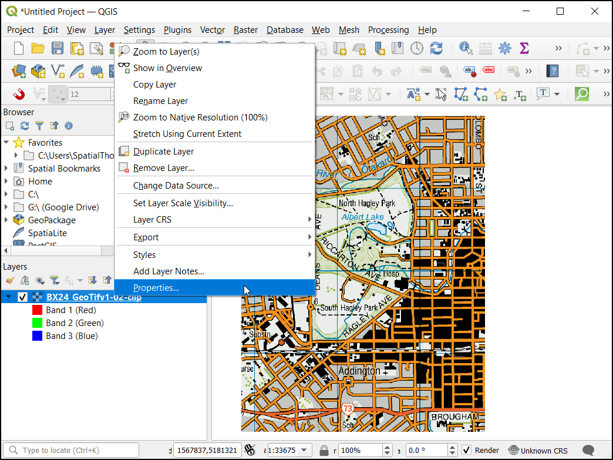
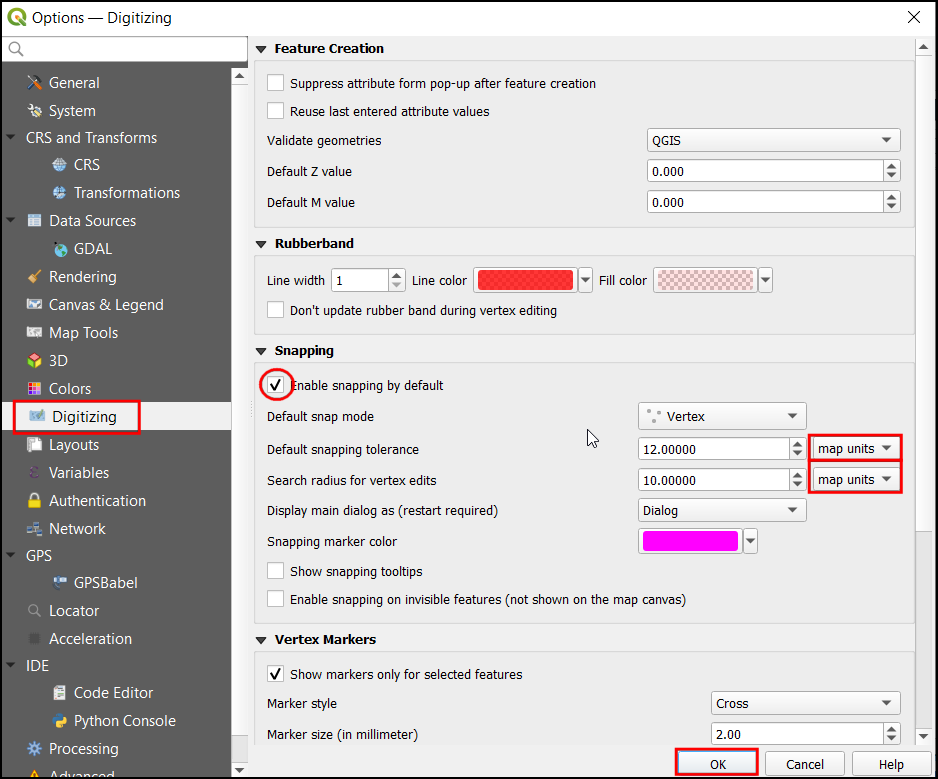
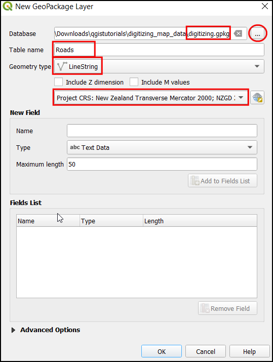
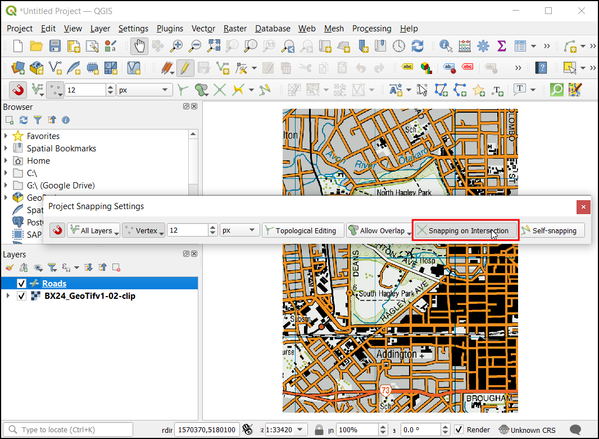
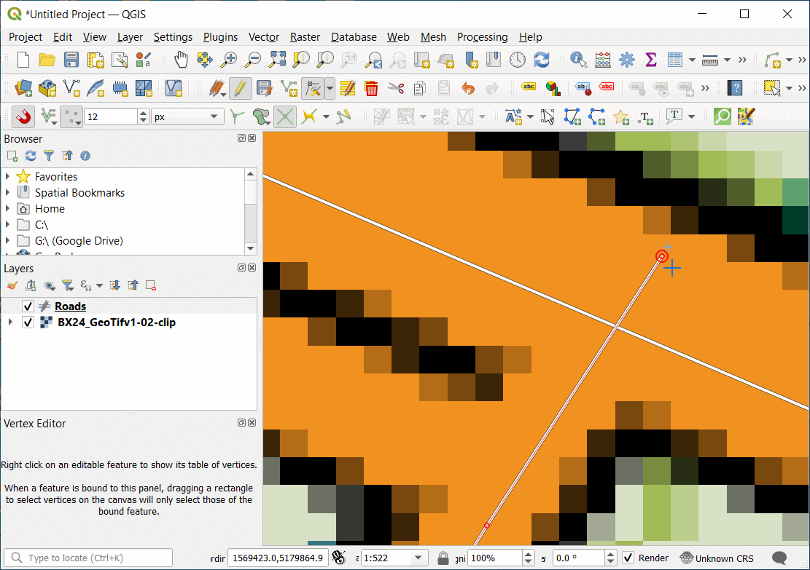
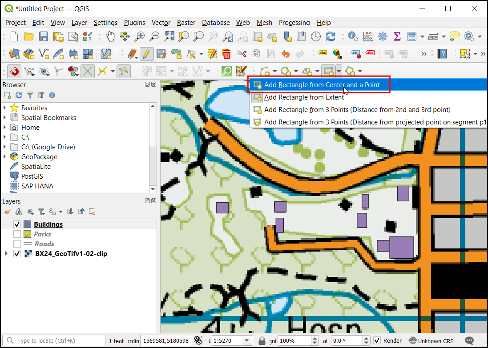

Ujaval Gandhi
Ujaval GandhiDigitalizacija podataka mapa (QGIS3)¶
Digitalizacija je jedan od najčešćih zadataka koje GIS specijalista mora da obavi. Često se velika količina GIS vremena troši na digitalizaciju rasterskih podataka kako bi se kreirali vektorski slojevi koje koristite u svojoj analizi. QGIS ima moćne mogućnosti digitalizacije i uređivanja na ekranu koje ćemo istražiti u ovom tutorijalu.
Pregled zadatka¶
Koristićemo rastersku topografsku mapu i kreirati nekoliko vektorskih slojeva koji predstavljaju objekte oko parka.
Druge veštine koje ćete naučiti¶
Izgradnja piramida za velike rasterske skupove podataka radi ubrzavanja operacija zumiranja i pomeranja.
Kreirajte i uredite GeoPackage.
Dobijte podatke¶
Land Information New Zealand (LINZ) pruža rasterske topografske karte u razmeri 1:50.000 za kopno Novog Zelanda i ostrva Čatam.
Preuzmite GeoTIFF datoteku slike sa stranice za preuzimanje mape Christchurch Topo50.
Radi lakšeg snalaženja, možete direktno preuzeti kopiju skupa podataka sa linka ispod:
Izvor podataka [LINZ]
Procedura¶
U QGIS-u, učitajmo datoteku slike. Idi na .

U dijalogu Data Source Manager izaberite Raster. U okviru Source kliknite na
...i pronađite preuzetu datotekuBX24_GeoTifv1-02.tifi kliknite na Open. Zatim kliknite na Add, a zatim na Close.

Ovo je velika rasterska datoteka i možete primetiti da kada zumirate ili pomerate mapu, mapi je potrebno malo vremena da se prikaže slika. QGIS nudi jednostavno rešenje za brže učitavanje rastera korišćenjem Piramida slika. QGIS kreira unapred prikazane pločice u različitim rezolucijama, i one vam se prikazuju umesto punog rastera. Ovo čini navigaciju mapom brzom i brzom. Kliknite desnim tasterom miša na sloj
BX24_GeoTifv1-02i izaberite Svojstva.

U dijalogu Svojstva sloja, izaberite karticu Piramide. Držite pritisnut taster Ctrl i izaberite sve rezolucije ponuđene u panelu Rezolucije. Ostavite ostale opcije na podrazumevanim vrednostima i kliknite na Napravi piramide.

Kada se proces završi, dijaloški okvir će prikazati piramide bez krsta. Ovo ukazuje da je izgradnja Image Pyramids završena. Kliknite na OK.

Pre nego što počnemo, potrebno je da podesimo podrazumevane Opcije digitalizacije. Idite na .

Izaberite karticu Digitalizacija u dijalogu Opcije. Označite Omogući podrazumevano prikačivanje u odeljku Prikačivanje. U Podrazumevani režim prikačivanja izaberite Čvor. Ovo će vam omogućiti da prikačite na najbliži čvor. Takođe više volim da podesim Podrazumevana tolerancija prikačivanja i Radijus pretrage za izmene čvorova u pikselima umesto u jedinicama mape. Ovo će osigurati da rastojanje prikačivanja ostane konstantno bez obzira na nivo zumiranja. U zavisnosti od rezolucije ekrana vašeg računara, možete izabrati odgovarajuću vrednost. Kliknite na U redu.

Sada smo spremni da započnemo digitalizaciju. Prvo ćemo kreirati sloj puta i digitalizovati puteve oko parka. Kliknite na ikonu iz panela. GeoPackage je otvoreni, nezaštićeni, platformski nezavisan i standardizovan format podataka za geografski informacioni sistem implementiran kao SQLite kontejner baze podataka. Ovo znatno olakšava njegovo pomeranje umesto gomile shapefile-ova. U ovom tutorijalu ćemo kreirati nekoliko poligonskih slojeva i linijski sloj tako da će GeoPackage biti bolje prilagođen. Uvek možete učitati GeoPackage i eksportovati slojeve kao shapefile ili bilo koji drugi format koji želite.

U dijalogu Novi GeoPackage sloj, kliknite na dugme … i sačuvajte novu GeoPackage bazu podataka pod nazivom
digitalizing.gpkg. Izaberite Naziv tabele kaoPutevii izaberiteLineStringkao Tip geometrije. Osnovna topografska mapa jeEPSG:2193 - NZGD 2000CRS.

Prilikom kreiranja GIS sloja, morate da odlučite o atributima svake karakteristike. Pošto je ovo sloj puta, dodatno ćemo imati dva primarna atributa - Ime i Klasu. U Novo polje unesite
Imetipa Tekstualni podaci, sa50kao Maksimalna dužina i kliknite na Dodaj na listu atributa. Sada kreirajte novi atributKlasatipa Tekstualni podaci, sa50kao Maksimalna dužina. Kliknite na U redu

Kada se sloj „Putevi“ učita, kliknite na dugme :guilabel:„Uključi/isključi uređivanje“ da biste sloj stavili u režim uređivanja.
Kliknite na dugme Dodaj linijski objekat. Kliknite na platno mape da biste dodali novi vrh. Dodajte nove vrhove zajedno sa objektom puta. Kada digitalizujete segment puta, kliknite desnim tasterom miša da biste završili objekat.
Белешка
Možete koristiti točkić za skrolovanje miša da biste uvećali ili umanjili prikaz tokom digitalizacije. Takođe možete držati dugme za skrolovanje i pomerati miš da biste se kretali.
Nakon što kliknete desnim tasterom miša da biste završili objekat, dobićete iskačući dijalog pod nazivom Put - Atributi objekata. Ovde možete uneti atribute novokreiranog objekta. Preskočite unos bilo koje vrednosti za fid jer je to sekvencijalni identifikator koji će biti automatski generisan. Unesite naziv puta onako kako se pojavljuje na topo mapi. Opciono, dodelite i vrednost Klase puta. Kliknite na U redu.

Podrazumevani stil novog sloja linija je tanka linija. Hajde da ga promenimo da bismo bolje videli digitalizovane karakteristike na platnu. Izaberite sloj „Putevi“ i kliknite na :guilabel:„Panel za stilizovanje slojeva“.

U Panelu za stilizovanje slojeva, potražite različite stilove sloja put. Izaberite
topo put. Kliknite na U redu.

Sada će sloj puta biti jasno vidljiv. Ako ste zadovoljni radom, kliknite na dugme Sačuvaj izmene sloja da biste sačuvali izmene.

Sada će sloj puta biti jasno vidljiv. Ako ste zadovoljni radom, kliknite na dugme Sačuvaj izmene sloja da biste sačuvali izmene.

Sada će se na panelu pojaviti Omogući prikačivanje (ikona magneta). Kliknite na nju da biste je omogućili i izaberite Svi slojevi i izaberite
Otvori opcije prikačivanja...

U dijalogu Opcije hvatanja, kliknite na Kačenje na preseku, što vam omogućava da kačite na presek pozadinskog sloja.

Sada možete da kliknete na dugme Dodaj objekat i digitalizujete druge puteve oko parka. Obavezno kliknite na Sačuvaj izmene nakon dodavanja novog objekata da biste sačuvali svoj rad. Koristan alat koji vam može pomoći u digitalizaciji je Alatka za vrhove. Kliknite na dugme Alatka za vrhove i izaberite
Alatka za vrhove (trenutni sloj).

Kada se alat za čvorove aktivira, kliknite na bilo koju karakteristiku da biste prikazali čvorove. Kliknite na bilo koji čvor da biste ga izabrali. Čvor će promeniti boju kada bude izabran. Sada možete kliknuti i prevući miš da biste pomerili čvor. Ovo je korisno kada želite da izvršite podešavanja nakon što je karakteristika kreirana. Takođe možete obrisati izabrani čvor klikom na taster Delete. (Option+Delete na Mac-u)

Kada završite sa digitalizacijom svih puteva, kliknite na dugme Uključi/isključi uređivanje. Kliknite na Sačuvaj.

Sada ćemo kreirati još jedan sloj za digitalizaciju parkova kao poligona. Kliknite na ikonu iz panela. U dijalogu Novi GeoPackage sloj, kliknite na dugme … i izaberite GeoPackage bazu podataka pod nazivom
digitizing.gpkg. Nazovite novi sloj atributom pod nazivomParkovi. IzaberiteVišePoligonakao Tip. Osnovna topografska mapa jeEPSG:2193 - NZGD 2000CRS. Kliknite na U redu. U Novo polje unesiteNazivi tip kao Tekstualni podaci, sa50kao Maksimalna dužina i kliknite na Dodaj na listu polja.. Kliknite na U redu.

Белешка
Poligon naspram višestrukog poligona
Poligon - Ravna površina definisana 1 spoljašnjom granicom i 0 ili više unutrašnjih granica. Svaka unutrašnja granica definiše rupu u poligonu.
Višestruki poligon - Koristi se za predstavljanje oblasti sa rupama unutra ili koje se sastoje od više nepovezanih oblasti. Na primer, 3 diskontinuirana poligona mogu se nacrtati i grupisati kao jedna karakteristika.
Pojaviće se iskačući dijalog. Izaberite dugme Dodaj novi sloj.

Sada izaberite sloj
Parkovi, zatim kliknite na put Uključi/isključi uređivanje i kliknite na dugme Dodaj obeležje i kliknite na platno mape da biste dodali vrh poligona. Digitalizujte poligon koji predstavlja park. Uverite se da ste se prikačili na vrhove puta tako da nema praznina između poligona parka i linija puta. Kliknite desnim tasterom miša da biste završili poligon.
Unesite naziv parka u iskačući prozor Parkovi - Atributi obeležja.

Sada digitalizujte gornji deo parka. Unesite naziv parka i sačuvajte izmene.

Sada, pre digitalizacije unutrašnjeg poligona, podesimo podešavanja koja mogu olakšati ovaj posao. Višestruki poligonski slojevi nude još jedno korisno podešavanje pod nazivom Izbegavaj preseke novih poligona. Izaberite Omogući prikačivanje (ikona magneta), kliknite na njega da biste ga omogućili, a zatim kliknite Svi slojevi i izaberite
Napredna konfiguracija.

Kliknite na dugme „Izbegavaj preklapanje na aktivnim slojevima“ u traci sa alatkama za prikačivanje.
Sada u Uredi naprednu konfiguraciju, izaberite Jedinice kao
piksele.

Označite polje u koloni Izbegavaj preklapanje u redu za sloj „Parkovi“.

Kliknite na Dodaj obeležje da biste dodali poligon. Sa opcijom Izbegavaj preklapanje, moći ćete brzo da digitalizujete novi poligon bez brige o preciznom prikačivanju na susedne poligone.

Kliknite desnim tasterom miša da biste završili poligon i uneli atribute. Magično, novi poligon se smanjuje i tačno postavlja na granicu susednih poligona! Ovo je veoma korisno prilikom digitalizacije složenih granica gde nije potrebno biti precizan, a i dalje imati topološki ispravan poligon. Kliknite na Uključi/isključi uređivanje da biste završili uređivanje sloja „Parkovi“.

Sada je vreme da digitalizujete sloj zgrada. Napravite novi poligonski sloj pod nazivom „Zgrade“ klikom na ikonu iz panela. Podesite Zgrade i MnogoPoligona. Izaberite CRS kao
EPSG:2193 - NZGD 2000. Kliknite U redu.

Kada se doda sloj „Zgrade“, isključite slojeve „Parkovi“ i „Putevi“ da bi osnovna topografska mapa bila vidljiva. Izaberite sloj „Zgrade“ i kliknite na :guilabel:„Uključi/isključi uređivanje“.

Digitalizacija zgrada može biti glomazan zadatak, a takođe je izazovno ručno dodavati čvorove tako da ivice budu normalne i formiraju pravougaonik. Koristićemo QGIS traku sa alatkama pod nazivom Digitalizacija oblika da bismo vam pomogli u ovom zadatku. Kliknite desnim tasterom miša na bilo koji prazan prostor u oblasti trake sa alatkama i aktivirajte „Traku sa alatkama za digitalizaciju oblika“.

Omogućite uređivanje pritiskom na ikonu olovke Uključi/isključi uređivanje.

Sada pod Dodaj pravougaonik padajući meni izaberite dugme Dodaj pravougaonik iz ekstenzije.

Zumirajte oblast sa zgradama. Kliknite i prevucite miš da biste nacrtali savršen pravougaonik. Slično tome, dodajte preostale zgrade.

Primetićete da neke zgrade nisu vertikalne i da ćemo morati da nacrtamo pravougaonik pod uglom koji odgovara otisku zgrade. U padajućem meniju Dodaj pravougaonik izaberite dugme Dodaj pravougaonik iz centra i tačke.

Uvećajte oblast zgrada u obliku dijamanta. Kliknite na centar da biste postavili tačku i prevucite miš da biste nacrtali pravougaonik.

Potrebno je da rotiramo ovaj pravougaonik da bi se poklopio sa slikom na topografskoj mapi. Alat za rotiranje je dostupan u traci sa alatkama Napredna digitalizacija. Kliknite desnim tasterom miša na prazno područje u odeljku trake sa alatkama i omogućite traku sa alatkama Napredna digitalizacija.

Kliknite na dugme Rotiraj element.

Koristite alatku Izaberi jedan objekat da biste izabrali poligon koji želite da rotirate. Kada se alatka Rotiraj objekat aktivira, videćete krstić u centru poligona. Kliknite tačno na taj krstić i prevucite miš dok držite levi klik. Pojaviće se pregled rotiranog objekta. Otpustite dugme miša kada se poligon poravna sa otiskom zgrade.

Sačuvajte izmene slojeva i kliknite na Uključi/isključi uređivanje kada završite sa digitalizacijom svih zgrada. Možete prevući slojeve da biste promenili njihov redosled prikazivanja. Zadatak digitalizacije je sada završen. Možete se poigrati sa opcijama stilizovanja i označavanja u svojstvima sloja da biste kreirali lepu mapu od podataka koje ste kreirali.

If you want to give feedback or share your experience with this tutorial, please comment below. (requires GitHub account)